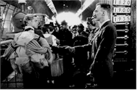
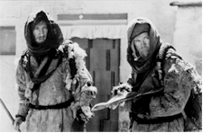
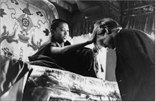
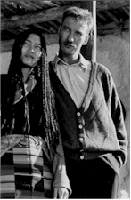
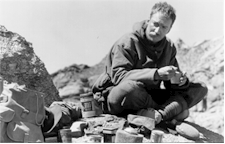

Contents | Features | Reviews | News | Archives | Store |
 |
|
| Movie Credits | Buy It! |
Seven Years in Tibet
Review by Carrie
Gorringe
Posted 10 October 1997
| Directed by Jean-Jacques Annaud Starring Brad Pitt, David Thewlis, Screenplay by Becky Johnston, |
It is 1939. Austrian Heinrich Harrer (Pitt), a medal winner at the 1936 Olympics and the epitome of the Aryan superman (right down to his membership in the Nazi party) is on his way to climb Nanga Parbat, one of the highest peaks in the Himalayan mountains for his own glory and (the party hopes) the glory of the Fatherland. Since Harrer had achieved prior fame as a mountaineer, he is eminently qualified for the mission. Headstrong and self-centered, Harrer abandons his pregnant wife and goes off with fellow Austrian Peter Aufschnaiter (Thewlis). On the way to fame for the Furhrer, a little incident called World War II erupts. Harrer and Aufschnaiter are no longer athletes who transcend international boundaries, but enemy aliens. They and their team are captured and placed in a British POW camp near the Indian-Tibetan border. After several attempts by Harrer to escape on his own, the team puts together a shrewd escape plan which succeeds. Harrer arrogantly tries to get to Tibet on his own, but ends up having to be rescued by Aufschnaiter; the two then combine forces. Their destination is Lhasa, the holiest city in Tibet, and one that is forbidden to foreigners. Several snow- and starvation-prone travails later, they succeed in attaining their goal (over the initial objections of Tibetan officials) and settle down happily to a life of limited stress, until the machinations of the Chinese (and Tibetan collaborators) lead to the Dalai Lama’s overthrow in 1950. Harrer leaves reluctantly, and goes in search of his son.
Nearly fifty years after Communist Chinese forces invaded and conquered Tibet, as part of Mao’s plan to restore China to its "proper" size, Hollywood has suddenly seized upon the plight of the Tibetans as the issue of the year. Following closely on the heels of Annaud’s film (around Christmas) will be Martin Scorsese’s Kundun, also about the Dalai Lama. From Steven Seagal to Harrison Ford to Sharon Stone, celebrities have been hopping on the pro-Tibet bandwagon until the entire apparatus has threatened to tip over from the sheer weight. And, of course, let’s not forget the efforts of Richard Gere, one who’s been in the trenches longer than most (nearly twenty years), and who dedicated his 1992 Oscar presentation speech into a well-intentioned, if rambling, anti-Chinese message (Gere suggested that the audience could shame the Chinese dictatorship through the immediate application of mass telepathy). Figures such as 1.3 million Tibetan deaths and the destruction of ninety per cent of monasteries over the course of the Chinese occupation are cited to substantiate this interest. Harrer, in his book’s epilogue, refers to the occupation as "genocide." The figures are indeed dreadful, and the behavior of the Chinese utterly unjustifiable and despicable by any standards.
With all due respect to the miseries inflicted upon the Tibetans by the Chinese, however, why is it the only humanitarian issue upon which Hollywood figures have focussed so much interest? There is yet another issue around which the Hollywoodites could have gathered which would have preserved their anti-totalitarian credentials in the East more certainly: the thirty-five years of abuses by the Burmese military against its own people. Sadly, this issue has had far less staying power in Hollywood than does Tibet, and both are equally revolting. Whether the Chinese government is attempting the simultaneous destruction of a culture and people different from their own, or is simply breaking down a competing power structure (in pre-occupation Tibet, religion and government authority were synonymous) in the usual sanguinary fashion often utilized by totalitarian governments is discernible only with unequivocal evidence. Let us hope that this Hollywood clique (excluding those who are practicing Buddhists, whose concerns for the survival of their religious homeland are legitimate) hasn’t merely succumbed to the "Lost Horizon Syndrome," seeing Tibet as a five-star retreat from the real world with lots of non-judgmental (by Western standards) religious therapy as part of the program, while they conveniently overlook the anti-Democratic, theocratic and xenophobic characteristics of pre-occupation Tibet. These Tibetan characteristics, naturally, don’t justify the equally cynical power, land and life grabbing by the bullying Chinese, but casting everyone in this horrid scenario into a Manichean mold does nothing to serve the needs of Tibet.
Then, of course, there was that rather embarrassing circumstance which occurred only weeks before the film was due to be released. Stern Magazine (of the "Hitler Diaries" fiasco in the mid-80s) made a rather unpleasant discovery about Herr Harrer’s past. Apparently, the mountain climber had resorted to the most straightforward means of social climbing in Austria during the late 1930s: he joined the Nazi party. Harrer, understandably, makes no mention of this extracurricular membership in Seven Years in Tibet, probably due partially to embarrassment and due to the fact that he was too busy in POW camps and Tibet to commit any sinister crimes. When "outed," he confessed that the information was true and then made the usual excuses about being a member but not really being a member, etc, and the filmmakers threw in a line or two to reflect this new reality. While it is true that Harrer is not a war criminal, one has to ask just how effective the spiritual conversion he claimed to have undergone actually was; if you can’t confess to being a Nazi, albeit of the most half-hearted variety, then what exactly did you learn from your experiences? Merely throwing the term "genocide" around in a potentially inaccurate fashion is not sufficient evidence of one’s personal growth as it may be of ignorance (or an attempt to deflect your own guilt at having been, however tangentially, part of a criminal political organization which truly did commit genocide). It’s no wonder that Brad Pitt’s depiction of Harrer, in the film’s initial scenes, is a walking cliché of Germanic extraction, right down to the clipped speech, stiff backbone and prickly demeanor; normally, this type of performance might be judged as a case of comic delusion, but, given Harrer’s background (about which Pitt claims to have known very little, and I would agree with him), the portrayal seems more accurate as time passes; I’m not sure I’d buy a used memoir from that untrustworthy, self-deluding man (Thewlis, by the way, encapsulates all of the personality traits of the long-suffering Aufschnaiter into an elegant and convincing package; he gently suggests, rather than embodying full-force, the underlying will to survive combined with the will to change).
Likewise, the film version of Seven Years In Tibet is less a forum for revelation than a case of one type of self-delusion meeting another, with predictably disastrous results. The script indulges too much in this type of feel-good mentality, spending copious amounts of time climbing ev’ry mountain and not enough time examining Tibetan society. Repeated shots of exquisite mountain ranges – making it more than evident why Harrer found this sort of life attractive – cannot shed light on the obviously contradictory forces that ruled Tibet and what made it so vulnerable to takeover (the film often feels like a macho version of The Sound of Music). To his own discredit, Harrer’s own account was rather limited on political issues. The film’s attempt to place tacit blame upon Buddhist philosophies of non-violence (don’t they have the guts to fight?) and open blame upon the thwarted ambitions of a Tibetan official is inadequate, at best. Moreover, there is an unpleasant undercurrent of semi-racist thinking in this film that does not correspond to Harrer’s own reminiscences. The film simplifies Harrer’s genuine love for the Tibetan people and characterizes them, by and large as either rigid-minded, if they are officials, and happy natives; at times, the film has the feel of a 1930s travelogue, observing, as it does, the natives with a combination of patronizing contempt for their "simplicity" and barely-concealed envy over their good fortune in maintaining a relatively peaceful culture (simplicity, it need hardly be said, is the price of a peaceful culture). West meets East, and here the combination is uneasy and, fundamentally, dishonest.
Dishonesty then meets clumsiness in conception and execution. It’s evident that the filmmakers want Seven Years in Tibet to have that epic feel of a David Lean film. This comparison is not surprising, since two of the producers on this film also worked with Lean on his final film, A Passage to India (1985) – one as an assistant director – and the third producer, John H. Williams, has described Seven Years in Tibet as the type of film that required "a David Lean-style epic director." Annaud simply does not have the same sensibilities as Lean; Seven Years in Tibet has too much of an emphasis upon surface gloss and not enough contemplation of the ugly nuts and bolts of human existence and interdependence. Annaud wants to leave the potentially embarrassing issues surrounding Harrer’s past conduct as far behind him as possible. Lean, on the other hand, could never have been considered a director of evasive viewpoints, especially in terms of characterization; in a Lean film, the personal ambiguities were on display for all to see, rather than partially concealed in the fear that the audience might lose sympathy for their plight. To take one example, the main character in Dr. Zhivago was an adulterer and deserted his wife; nevertheless, he had enough other positive traits – his devotion to duty and his love of Lara – to act as a counterbalance that compelled the audience to care about his plight and to render the complexities of the Russian Revolution comprehensible. Poor Brad Pitt, by contrast, is forced by the script to transform Harrer’s personality from one marked by highflying arrogance to noble self-sacrifice in a single bound; there are no ties to narrative context, save for his "enchantment" by the quaintness of Tibet. Harrer’s conversion is of the tourist-class variety, rather than one that stems from a long exposure to different philosophies and numerous periods of introspection. Bestowing trumped-up situations such as a love triangle involving Harrer and Aufschnaiter, and Harrer’s supposed regret over leaving his son upon Harrer does not humanize him as much as they inadvertently display the lack of care with which the adaptation was undertaken.
Lack of care, in this case, is intimately linked with an excessively truncated story line. Cinematic epics are built upon careful considerations of narrative structure linked with careful characterization. This takes time. You can’t have depth, however, if you are attempting, for what must have been the most unfathomable of reasons, to keep the film length under two-and-a-half hours. If the issues were budgetary, the film shouldn’t have been made. Under the circumstances, Seven Years in Tibet ends up as a Trojan Epic, galloping through and upon history at a breakneck pace; it masquerades as a magnificent structure, full of revelatory promise, and delivers only its own self-destructive force as it destroys audience expectations.
Contents | Features | Reviews | News | Archives | Store
Copyright © 1999 by Nitrate Productions, Inc. All Rights Reserved.